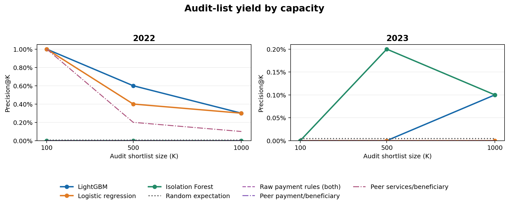

FraudLens audit-priority evaluation
Held-out 2022 and 2023 results. A hit means a provider later appeared in the two-year Scenario A exclusion label. It is not confirmed fraud or money saved. Isolation Forest ranks unusual decision-year billing without using exclusion labels.
P4 evaluation complete: P1, P2 and P3 handoffs are confirmed. Model differences remain uncertain. With no fixed audit budget or cost, all three K values are shown.
Model comparison
| Model | Hits | Precision | Recall | Lift |
|---|
Hits by workload

Precision by workload

Evaluation pool

Both payment rules found zero hits at the displayed capacities. Random selection almost always found zero. The full analysis and limitations are in the evaluation summary.